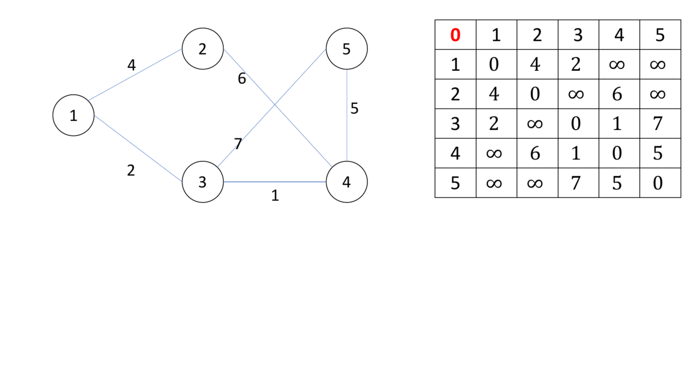
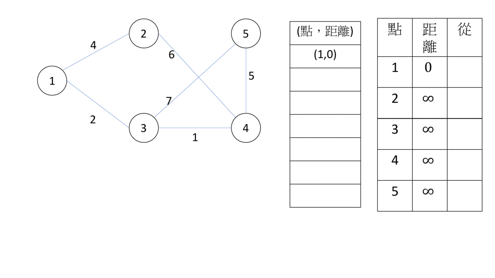

最短路徑
術語
- 負邊：權重為負的邊
- 負環：權重和為負的環
- 點源：成為起點的點，分成單源頭及多源頭。
- 鬆弛：單源頭最短路徑中，對於任意兩個點 ，起點 到它們的距離 ，如果 ， 為邊 的權重，我們可以讓 更新為 ，讓 到 的距離縮短，這個動作稱為 "鬆弛"。
Floyd-Warshall Algorithm
為多源頭最短路徑，求出所有點對的最短路徑。 Floyd-Warshall 是一種動態規劃問題，以下是他的 dp 式。
- 狀態： 代表，若只以點 當中繼點的話， 到 的最短路徑長。
- 轉移：
-
基底：
-

時/空間複雜度皆為 ，利用滾動陣列技巧，空間複雜度可優化至
1 2 3 4 | |
執行的時候如果 ，代表存在負環，Floyd-Warshall 是可以判斷負環。
單點源最短路徑
求出一個點到所有點的最短路徑，其實就是以起點為根，最短路徑是由父節點鬆弛而來的最短路徑樹。我們找最短路徑，就是一直把鬆弛，直到所有點都不能鬆弛，所有點都獲得最短路徑了。要蓋出最短路徑樹，就只要把點指向最後一次被誰鬆弛就好了。
Bellman-Ford Algorithm
為單點源最短路徑，設起點的最短路徑為 0，其他點為無限大，每次對所有邊枚舉，因為最短路徑不會經過同樣的邊第二次，所以只要執行 輪，複雜度為 。如果執行第 次時還有邊可以鬆弛，代表有負環，Bellman-Ford 也可以當成負環的判斷方法。
1 2 3 4 5 6 7 8 9 10 11 12 13 14 15 16 17 18 19 20 21 22 23 24 25 26 27 28 29 30 31 | |
此演算法還有一個優化版本叫做 Shortest Path Faster Algorithm (SPFA)，他的做法是枚舉起點是鬆弛過的邊，以鬆弛過的點除非被重新鬆弛，否則不會更動。預期複雜度為 ，不過最差狀況仍為 。
1 2 3 4 5 6 7 8 9 10 11 12 13 14 15 16 17 18 19 20 21 22 23 24 25 26 27 28 29 30 31 32 33 34 35 36 37 38 | |
Dijkstra’s Algorithm
同樣為單點源最短路徑，他的想法和 Prim's Algorithm 類似，每次把離樹根最近的點加入最短路徑樹裡，並把所有與該點相連的邊鬆弛，已經加入的點不會在被鬆弛。
- 
使用 priority_queue 的複雜度為 ，使用費波那契堆，複雜度為
1 2 3 4 5 6 7 8 9 10 11 12 13 14 15 16 17 18 19 20 21 22 23 24 25 26 27 28 29 30 31 32 33 34 35 36 37 38 39 40 41 42 43 44 45 46 47 48 49 50 51 | |
而 Dijkstra’s Algorithm 不能處理負邊，原因是一旦點加入最短路徑樹，就不會再被更新，以維持良好複雜度，負邊會破壞此規則。
整理
| 演算法 | Floyd-Warshall | Bellman-Ford | SPFA | Dijkstra |
|---|---|---|---|---|
| 點源 | 多點源 | 單點源 | 單點源 | 單點源 |
| 時間複雜度 | 期望複雜度 | 使用 priority_queue | ||
| 判斷負環 | O | O | O | X |
| 處理負邊 | O | O | O | X |
- 如果 ，可以直接使用 Floyd，有時候需要計算許多點對的距離。
- 沒有負邊且起點固定(單點源)的問題使用 Dijkstra。
- 其他狀況使用 Bellmam Ford / SPFA。
例題練習
- 全點源
- 單點源
- 判斷負環
UVa 12519 - The Farnsworth Parabox
在多重宇宙中旅行，有 條路線，第 條路線可以從宇宙 到 年後的宇宙 ，也可以從宇宙 到 年前的宇宙 ，問有沒有一種走法可以到同一個宇宙的未來?
如果可以有一種方法可以到同一個宇宙的未來，反過來走可以到同一個宇宙的過去，將 當成邊的權重，這題變成判斷有沒有負環。
AtCoder Beginner Contest 061D - Score Attack
給定一張有向圖，求 走到 的路徑中，權重和最大為何，如果為無限大，請輸出 inf。
把所有權重乘上 ，就變成了求最短路徑，和判斷是否有負環。找到負環，還要判斷負環是不是對終點有影響，如果不影響終點，答案就不是 inf。
UVa 534 - Frogger
給定 顆石頭的位置，假設一條路徑 的 cost ，請問 號石頭到 號石頭路徑 cost 最小為何?
這題可以修改 Floyd-Warshall 算法，定義 為從 號石頭到 號石頭路徑 cost 最小值。
AtCoder Beginner Contest 243E - Edge Deletion
給定一張圖，問最多可以移除幾條邊，滿足：1. 原圖是連通圖 2. 任兩點最短距離不變
先用 Floyd-Warshall 計算任兩點之間距離，枚舉每一條邊 ，如果找到一個 的情況，那麼這條邊可以移除。